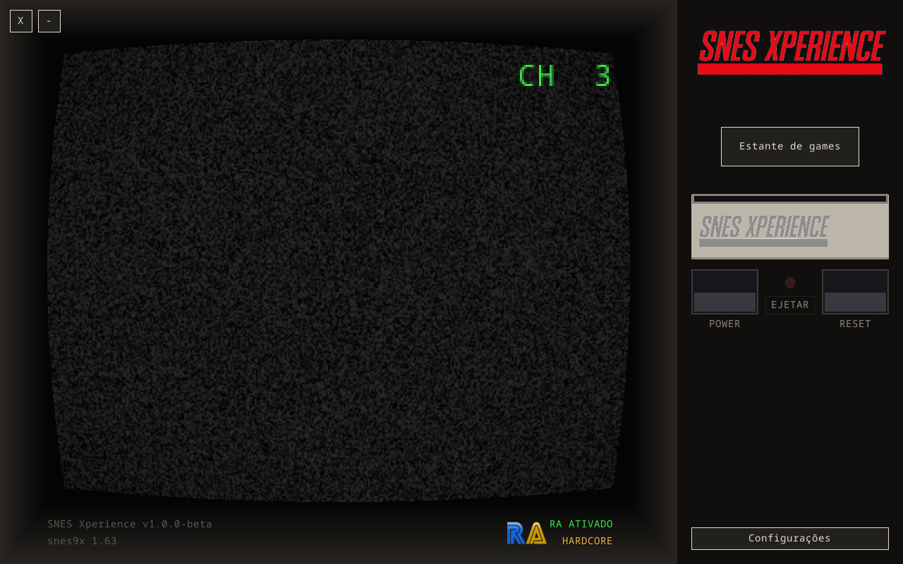
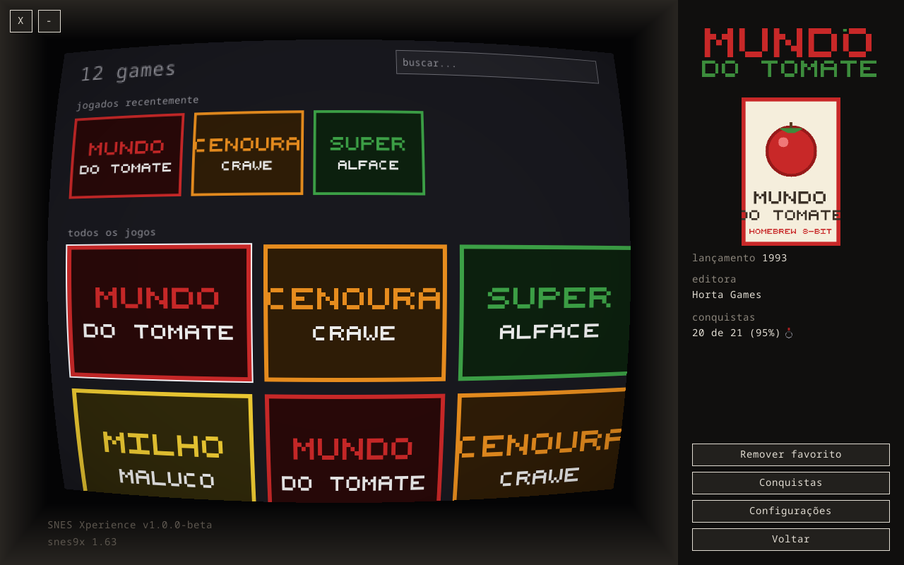
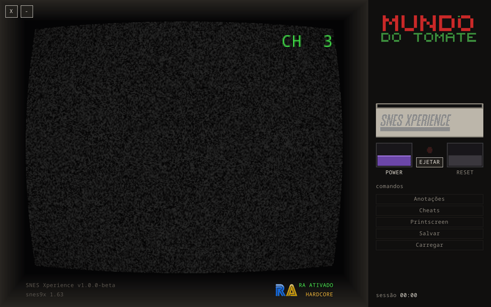
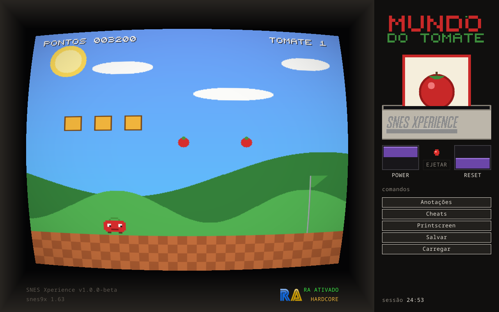

// projeto pessoal, sem fins comerciais
Retro
Xperience
Um console inteiro desenhado na sua tela — gabinete, tubo CRT e painel de controle de verdade — em vez de só uma janela com o jogo.
- SNES — 1.0 beta
- PS1 — em breve
- N64 — em breve

O conceito
A maioria dos emuladores te dá uma janela. O Xperience te dá o aparelho: você escolhe o jogo, o cartucho desce e encaixa no slot com um clique, e o console só liga quando você aperta o Power — igual ao hardware.
-
Cartucho de verdade
Escolher um jogo insere o cartucho de verdade, com animação, clique de encaixe e de destravamento. Ejetar só com o console desligado, como no original.
-
Tubo CRT de verdade
Filtro NTSC RF, tela cheia por padrão na resolução nativa do monitor (16:10/16:9 — Steam Deck, laptop, TV) e botão de fechar no canto, sem barra de título.
-
Estante viva
Busca, “jogados recentemente” e histórico, com tempo de jogo por jogo — contando só com o console ligado — e por sessão.
-
Anotações num livro
Pausou, abriu o livro: cheats curados em checklist, nota de texto livre e 15 slots de captura de tela fixáveis e nomeáveis.
-
Só mouse e gamepad
Tudo funciona sem teclado. A única exceção é escrever uma anotação, que precisa de teclado por natureza.
-
Portátil, zero nuvem
Sem banco de dados e sem raspagem online: tudo em pastas ao lado do executável. O core baixa sozinho pelo menu de configurações.
A linha
Retro Xperience é o guarda-chuva. Cada console ganha seu app, e todos dividem a mesma ideia — quando PS1 e N64 existirem, dividem também a mesma estante, o mesmo painel e o mesmo tubo.
-
1.0 beta
SNES Xperience
O primeiro da família. Core snes9x, filtro NTSC do blargg, cartucho que desce no slot com clique, chaves Power/Reset roxas e RetroAchievements de ponta a ponta.
-
em breve
PS1 Xperience
O mesmo conceito na era 32-bit: disco na bandeja que abre com clique, memory card no slot e o painel cinza da estação seguinte. Ainda no papel.
-
em breve
N64 Xperience
O cartucho volta — agora com encaixe firme e alavanca. Mesma estante, mesmo tubo, outra geração. Ainda no papel.
SNES Xperience em imagens



ps: os screens mostram o Mundo do Tomate e outros homebrews fictícios desenhados pixel a pixel para estas fotos — nenhum jogo comercial aparece no site.
- Ano e editora de fábrica sem DAT nenhum — tabela embutida derivada do TOSEC; um DAT local do No-Intro tem prioridade quando concorda, e um botão renomeia as ROMs para o padrão canônico.
- Pacotes prontos — DMG (macOS), zip (Windows) e AppImage (Linux), todos com SDL3 embutido — saem automático a cada release.
- Escrito em Rust sobre SDL3, em quatro camadas de crates: apresentação, domínio, emulação e plataforma.
Conquistas na TV
Integração completa com o RetroAchievements (desde a 1.0 beta): login nas configurações, identificação do jogo pelo hash da ROM e avaliação das condições em tempo real contra a RAM do core — o “CONQUISTA DESBLOQUEADA” aparece no queixo da TV com badge e pontos.
Enquanto nada desbloqueia, um badge fixo RA ATIVADO fica no queixo, indicando o modo hardcore ou softcore. No painel da estante, cada jogo mostra “X de Y (Z%)” sincronizado com o servidor, a lista marca as conquistas que você já tem (ganhou onde for) e um botão abre tudo dentro da TV.
E quem zerou o jogo merece medalha: dourada para 100%, prateada para quem chegou ao fim — cheias no hardcore, vazadas no softcore — ao lado do número de conquistas.
